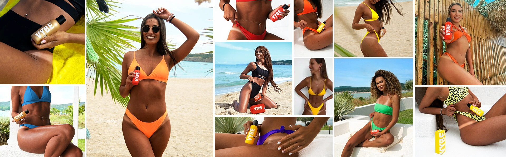
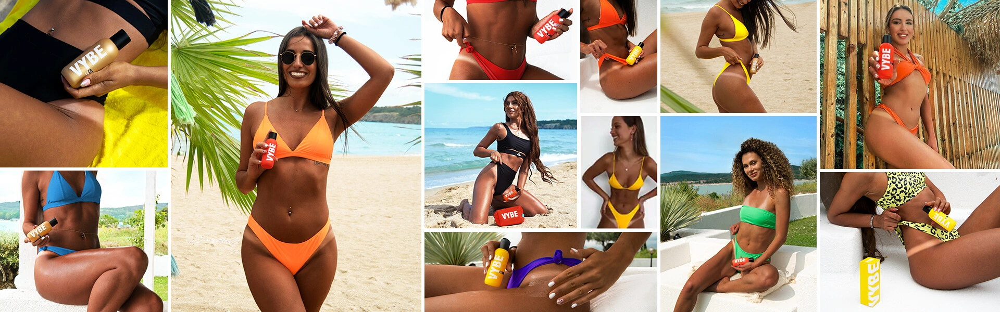

Show your skin some love! Cool. Soothe. Moisturize.
-
 Advanced hydration for a lasting tan.
Advanced hydration for a lasting tan.
VYBE AFT is especially designed to instantly moisturize, soothe and cool the skin after sun exposure. Because deep hydration eliminates the risk of peeling and cracking, your skin can remain evenly tanned for a very long time. Last but not least, proper hydration during suntanning allows the skin to tan better and faster.
-
Instant calming with Aloe Vera & Collagen.
Enriched with the best natural cooling ingredient - Aloe Vera - our ultra hydrating formula soothes, repairs and heals the skin, even after the first application. On the other hand, Collagen helps firm up the texture of your skin, making it visibly firmer and satin-smooth.
-
Seal your tan in!
By hydrating the skin and locking the moisture inside, VYBE AFT ensures that every nuance of dark tan you get is “sealed in''! On the other hand, the moisture-lock mechanism of VYBE AFT helps your cells retain as much moisture as possible. This action keeps your skin hydrated and soft at all times, which is vital to attaining more healthy tan faster and keeping it for longer.
-
Scent? We’ll just say Mmm.
Your skin will bear the fragrance of tasty Coconut all day long!
 Almond Oil
Almond Oil
 Wheat germ oil
Wheat germ oil
 Sesame oil
Sesame oil
 Grape seed oil
Grape seed oil
 Aloe vera
Aloe vera
 D-panthenol
D-panthenol
 Collagen
Collagen

 


Reviews
User Reviews
4.9 out of 5
5 user review(s)
5 star
76 %
4 star
24 %
3 star
0 %
2 star
0 %
1 star
0 %
Write a review for this product
Share your thoughts with other customers.
Aria
Fantastic to use after a day at the beach. It gives me an instant calming feeling and it keeps my tan amazing for a long time. What I love the most is how greatly it moisturizes my skin and the lovely glow it gives.
Verified Purchase
Scarlett
Really nice after sun lotion. It’s made with aloe vera and collagen which instantly repairs the skin after sun exposure, soothing dryness and irritation. It keeps my usually dry and flaky skin very soft and smooth. I can feel it moisturized and healthy during the whole day.
Verified Purchase
Chloe
VYBE AFT is a must if you want to prolong your tan. It maintains your tan and keeps the skin from dehydrating and flaking - and you feel very smooth and soft after using it. Doesn’t have that all greasy feeling, as with many other aftersun products.
Verified Purchase
Grace
Haven't been able to find a product that works as nicely as this does for the price. It calms my skin and makes it so smooth and silky.
Verified Purchase
Lily
It worked wonders and I loved how fresh it made my skin feel. I will never switch to another aftersun balm. Recommend it to everyone.
Verified Purchase